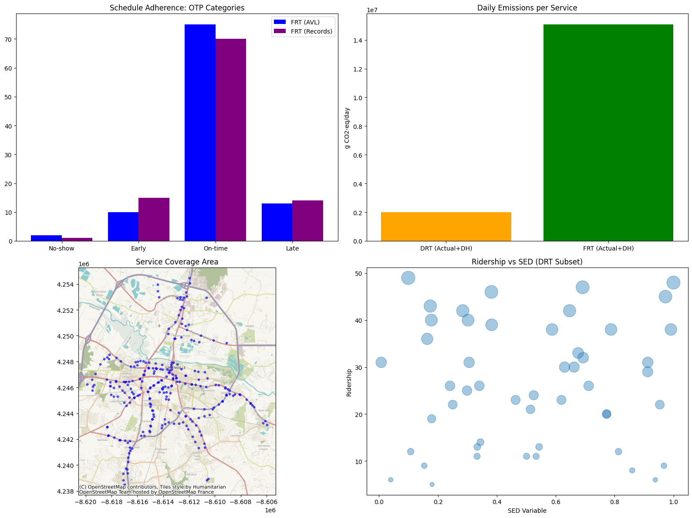

Dual-Perspective Transit KPI Framework: Integrating GeoAI and Data-Driven Analysis for Urban Mobility in Greenville, SC
Project Overview
This project, titled the Dual-Perspective Transit KPI Framework, integrates GeoAI and data-driven analysis to evaluate the efficiency and sustainability of urban mobility in Greenville, SC. By synthesizing GTFS spatial data with NTD operational metrics and Census socio-economic indicators, the framework implements complex travel behavior modeling and network performance evaluations. The research focuses on simulation and optimization of service delivery across Fixed-Route and Demand-Response Transit, utilizing geospatial joins and statistical regressions to quantify accessibility, environmental impact (GHG emissions), and cost-effectiveness. Key research themes include urban mobility optimization, accessibility modeling, spatial demographics, and transit equity analysis, providing a scalable toolkit for evidence-based transit planning and policy design.
Figures & Visualizations
